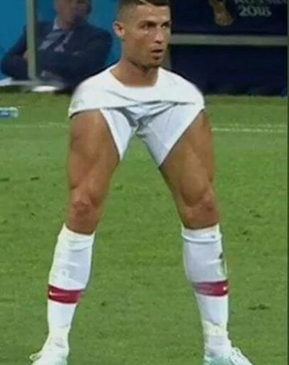

Neymar da Silva Santos Júnior, mais conhecido apenas como Neymar, é um futebolista brasileiro que atua como atacante. Atualmente joga pelo Paris Saint-Germain e pela Seleção Brasileira. É considerado o principal futebolista brasileiro da atualidade e um dos melhores futebolistas do mundo.
Cristiano Ronaldo dos Santos Aveiro é um futebolista português que atua como extremo-esquerdo ou ponta de lança. Atualmente joga pelo Al-Nassr, da Arábia Saudita e pela Seleção Portuguesa, onde é capitão.
Lionel Andrés Messi Cuccittini é um futebolista argentino que atua como atacante. Atualmente joga pelo Paris Saint-Germain e pela Seleção Argentina, onde, atuando como capitão, venceu a Copa do Mundo do Catar de 2022.